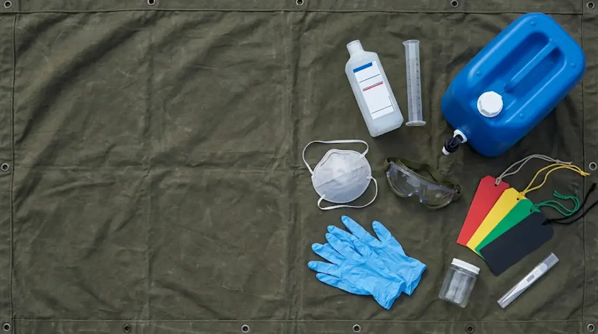
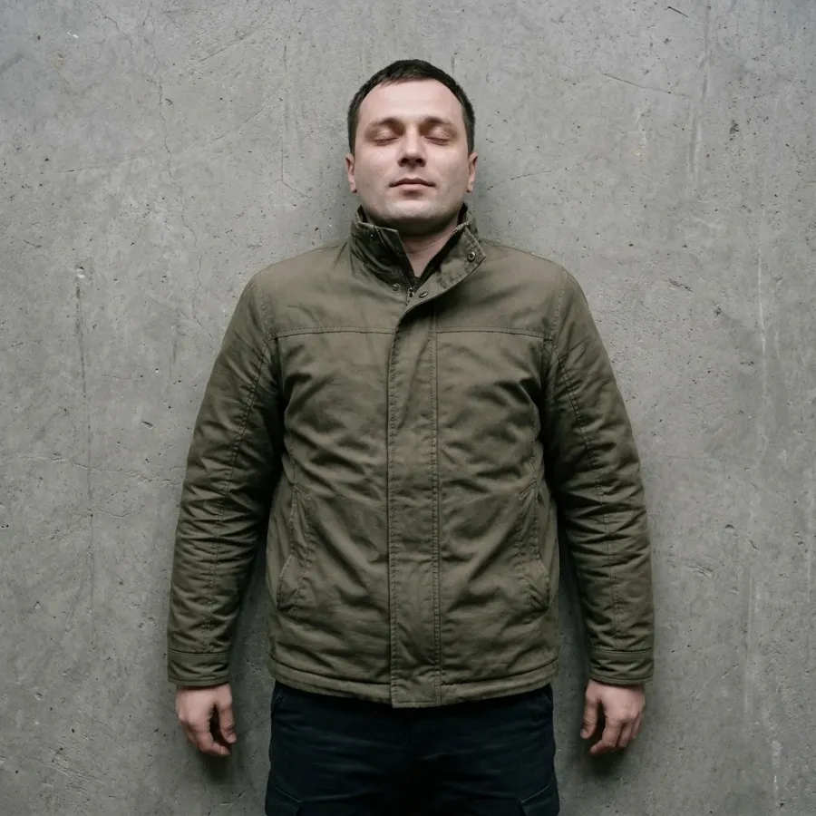
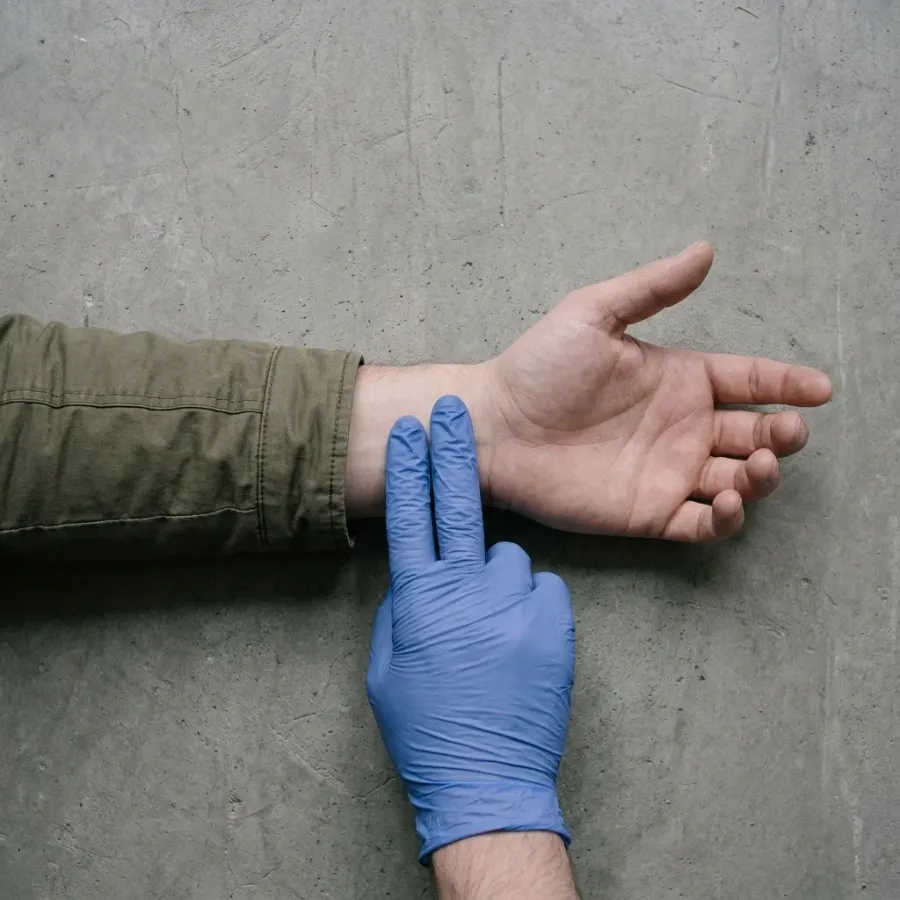
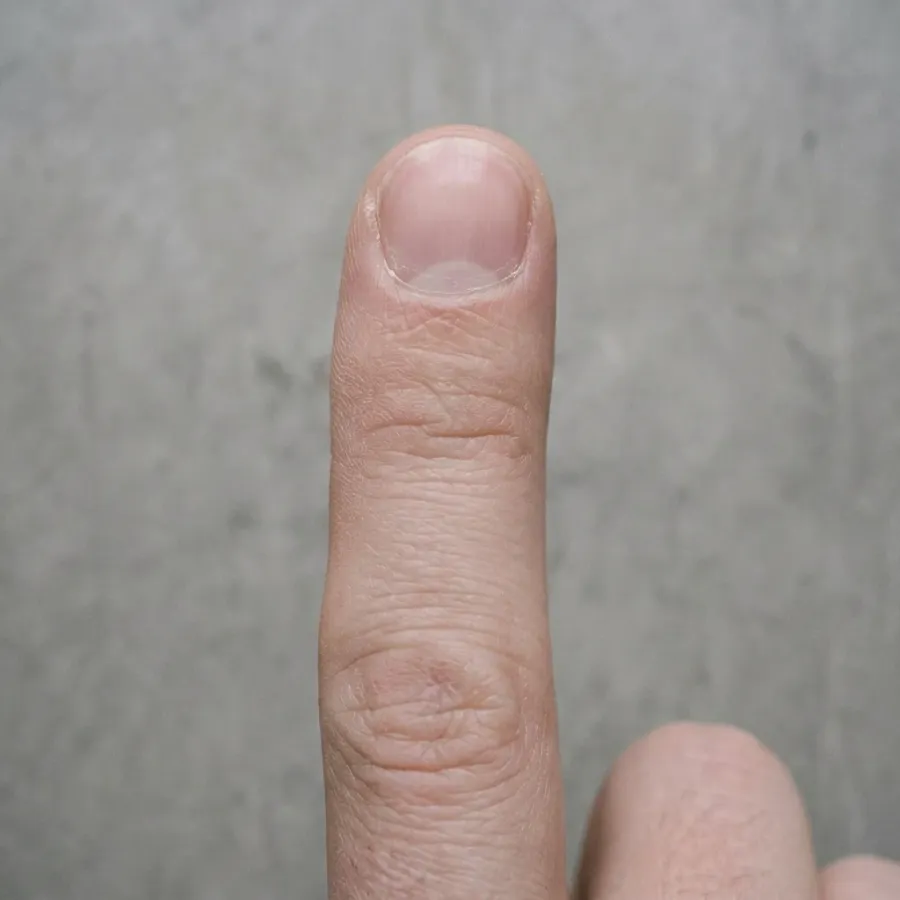
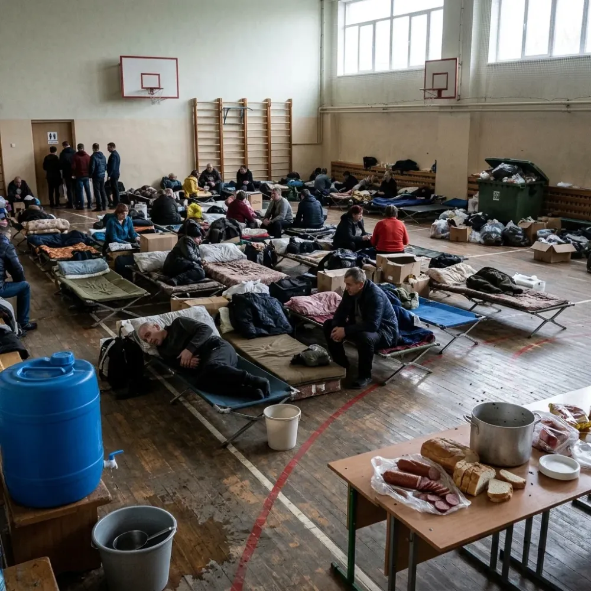
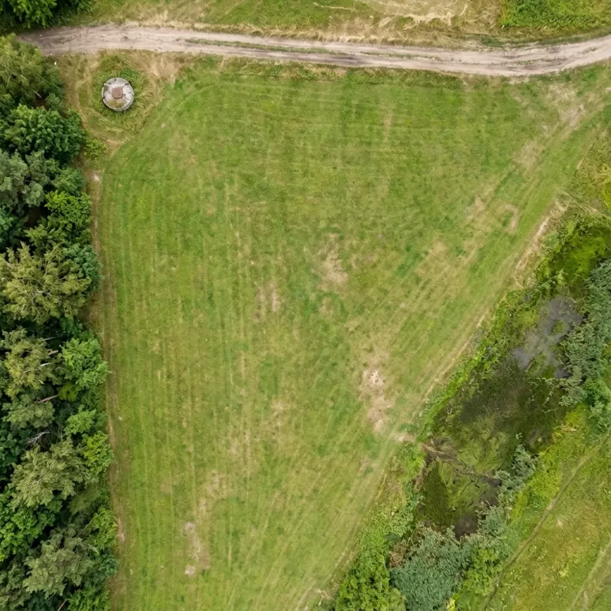
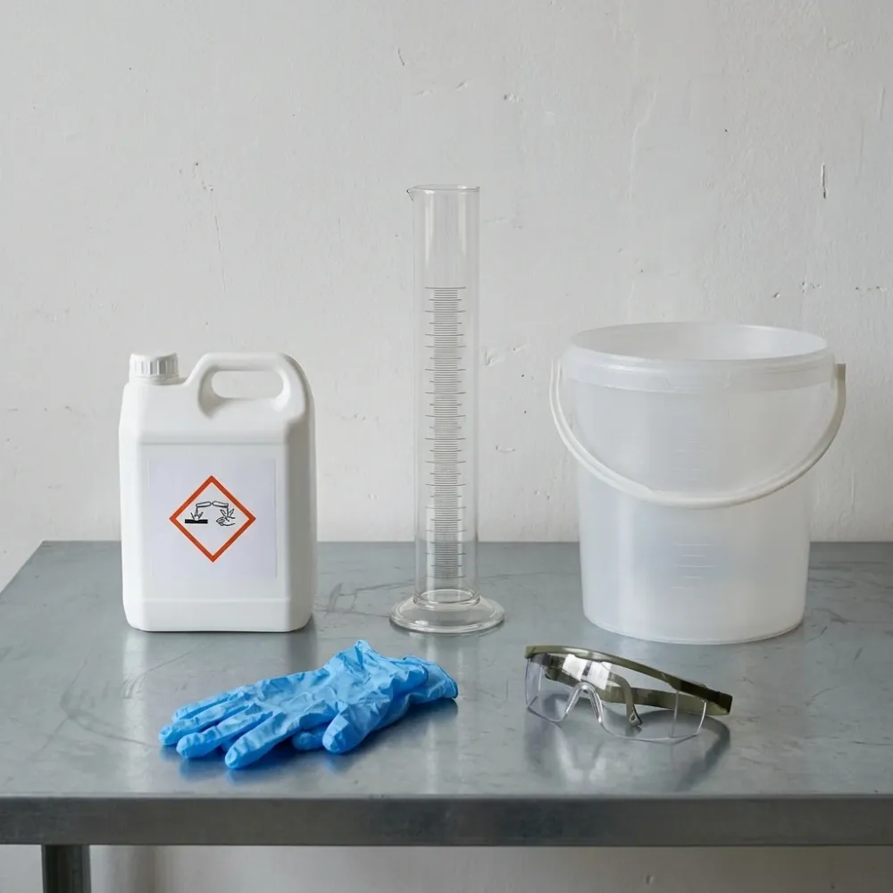
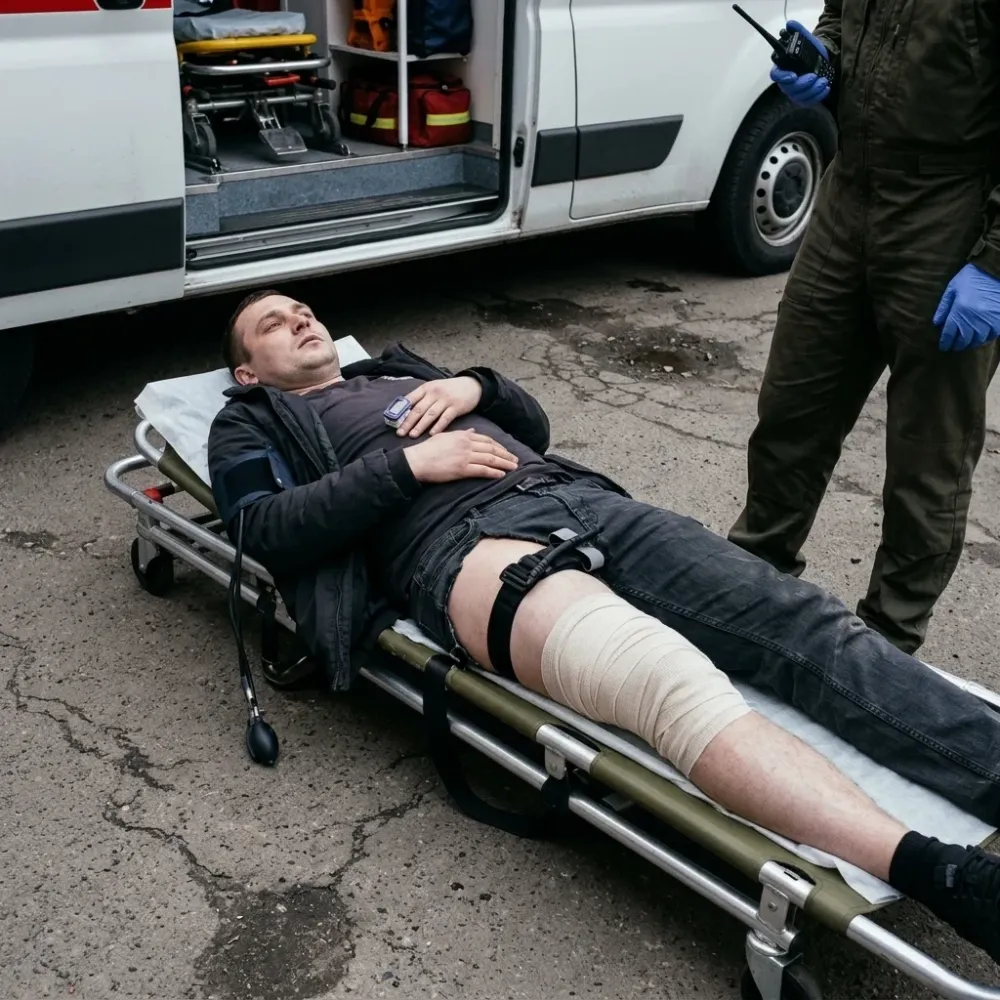

Практичне заняття № 10
Організація санітарно-гігієнічних і протиепідемічних заходів у надзвичайних ситуаціях. Екстрена медична допомога при масових ураженнях у мирний та воєнний час.
Працюйте самостійно, без підручника і без обговорення з сусідами. Час — до кінця пари.
Як виконувати
- Введіть прізвище, ім’я, групу і номер варіанта, який назвав викладач. Натисніть «Почати».
- Виконайте всі 4 блоки. Тести: оберіть одну відповідь. Розрахункові задачі: впишіть число (дробову частину через кому) або оберіть відповідь. Ситуаційні задачі: прочитайте умову і дайте відповіді на питання під нею. Відповідність: оберіть пару в кожному рядку. Послідовність: натискайте кроки по черзі.
- Відповіді можна змінювати, поки не натиснули «Завершити». Завершити можна лише після відповіді на всі завдання. Внизу видно, скільки вже виконано.
- Натисніть «Завершити і отримати оцінку». Результат автоматично потрапить до викладача. Пройти контроль можна один раз.
- Покажіть екран з результатом викладачу.
Якщо сторінку випадково закрили — відкрийте посилання знову на тому самому пристрої: відповіді збережуться.
Усього 67 балів. Оцінка за 5-бальною шкалою: 90–100 % — «5», 75–89 % — «4», 60–74 % — «3», менше 60 % — «2».
Практичні навички заняття
Кожна навичка — практичне вміння з РП у вигляді ситуації або міні-гри з реальною сценою. Неправильна дія має наслідок: ви бачите, що сталося з людьми, а шкала стану падає. Критична помилка — невдача, навичку доведеться почати заново. Після правильного кроку бачите обґрунтування.
Первинне медичне сортування START
Вибух газу в пункті тимчасового розміщення, де вже тиждень реєструють гостру респіраторну інфекцію і кишкові розлади. На пункт збору доставлено 10 постраждалих. Ви — перший медик на місці, працюєте в ЗІЗ.
- Номери вгорі — постраждалі. Для кожного прочитайте, що він робить, і оцініть за START.
- Дихання: «Рахувати 15 с» і рахуйте підйоми грудної клітки, ×4. Якщо не дихає — «Відкрити дихальні шляхи».
- Пульс: дивіться, чи пульсує червоне коло на зап’ясті. Капілярне наповнення: утримуйте «Натиснути на ніготь», відпустіть і стежте, за скільки секунд повернеться колір.
- Свідомість: «Стисніть мою руку». Позначте ознаки інфекції і оберіть колір бирки.
- правильна категорія для всіх 10
- правильно позначено ознаки інфекції (окремий потік)
- до 60 с на одного постраждалого
Коротка теорія
START: ходить → зелений. Не ходить → дихання: немає → відкрити дихальні шляхи → не з’явилося → чорний, з’явилося → червоний. ЧД понад 30 → червоний. Немає пульсу на променевій артерії або капілярне наповнення понад 2 с → червоний. Не виконує прості команди → червоний. Інакше → жовтий.
Гарячка, кашель, діарея, висип → позначка «інфекція», окремий потік і транспорт з інфекційним контролем. Сортування повторюють: на пункті збору, після втручань, перед евакуацією.
⚠ Перша повна спроба — залікова (іде в оцінку за навички). Далі можна тренуватися скільки завгодно.
Сортування START
Навичка з РПОК: первинне медичне сортування великої кількості постраждалих за START з виділенням окремого потоку для осіб з ознаками інфекції. Порядок: ходить? → дихає (якщо ні — відкрити дихальні шляхи)? → ЧД понад 30? → пульс на променевій артерії / капілярне наповнення понад 2 с? → виконує прості команди? Натискайте номер постраждалого, щоб перейти до нього.
Дихання 15 с × 4

Пульс на променевій артерії

Капілярне наповнення норма ≤ 2 с

Психічний стан
Оцінювання санітарно-гігієнічних та епідемічних ризиків
Шкільний спортзал — пункт тимчасового розміщення, третя доба після евакуації, близько 180 людей. Черговий медик повідомив: за 2 доби — 9 випадків діареї, двоє з гарячкою. Вас призначили відповідальним медиком пункту. Керівник чекає доповідь і план. Ваша мета — зупинити спалах і не пропустити інших загроз: знайти, через що в пункті передаються інфекції, і закрити ці шляхи з обмеженими силами.
- На фото 11 пронумерованих точок. Торкніться точки й уважно прочитайте, що там видно — висновків там немає, їх робите ви.
- Крок 1: це загроза здоров’ю людей чи норма? Ризики бувають не лише щодо діареї.
- Крок 2: оберіть захід і строк. Увага: серед заходів є такі, що виглядають правильними, але мають підступ.
- Негайних бригад лише 3 — «негайно» можна поставити тільки трьом заходам. Вирішіть, що справді не може чекати.
- Зверху — прогноз за вашим планом. Чи спрацює план насправді — побачите наприкінці тижня з розбором кожного рішення.
- усі ризики розпізнано, норму не сплутано з ризиком
- для кожного ризику — дієвий захід без підступу
- негайні бригади — на те, що справді не чекає
- реально за 7 діб — не більше 15 нових випадків
Коротка теорія
Що оцінюють: воду (джерело, знезараження, зберігання, видача через кран), харчування (холодовий ланцюг, захист від мух, персонал), туалети і миття рук (1 туалет на 20 осіб, мило), розміщення (не менше 3,5 м² на особу, провітрювання), відходи (закриті контейнери, вивезення), хворих (виявлення, ізоляція), переносників.
Стан: благополучний — поодинокі непов’язані випадки; нестійкий — поодинокі пов’язані випадки, умови погіршуються; неблагополучний — груповий спалах; надзвичайний — масове швидке поширення.
Заходи діють на ланки: джерело (виявлення, ізоляція), механізм передачі (вода, їжа, руки, туалети), сприйнятливих (гігієна, щеплення). План: захід — відповідальний — ресурс — строк.
⚠ Перша повна спроба — залікова (іде в оцінку за навички). Далі можна тренуватися скільки завгодно.

Санітарні зони табору
Розгортаєте польовий табір на 120 осіб на 7 діб. Аерофото ділянки: вгорі дорога, ліворуч угорі — артезіанська свердловина (джерело води), праворуч унизу — заболочена низина. Ділянка має схил униз праворуч — до низини. На мапі пунктиром показано висоту над низиною (+1…+5 м): ліворуч угорі найвище, праворуч — найнижче. Біля кожного кола підписано його висоту. Вітер західний — дме зліва направо. Ширина ділянки близько 200 м.
- Торкніться об’єкта внизу (кухня, туалети, вода…), потім — кола на фото, куди його поставити. Щоб переставити, торкніться поставленого об’єкта.
- Розмістіть усі 7 об’єктів.
- Натисніть «Запустити табір» і подивіться, що відбуватиметься 7 діб: дощі, вітер, стоки.
- жодної критичної помилки (спалаху)
- не більше одного порушення
Коротка теорія
Вода: не менше 15 л на особу на добу; закриті промарковані ємності, видача через кран; пункт видачі — на підвищенні, далеко від стоків.
Туалети: 1 на 20 осіб; нижче за рельєфом від води, кухні й житла; не далі ≈50 м від житла; не ближче 50 м від кухні та води; поруч — миття рук.
Кухня — з навітряного боку від туалетів і відходів. Відходи — закриті контейнери, окремий майданчик, не ближче 50 м від кухні й води, вивезення щодня.
Ізолятор — окремо від житла (з окремим туалетом), але досяжний для медика. Медпункт — біля під’їзної дороги. Низину і заболочені ділянки під табір не використовують. Площа — не менше 3,5 м² на особу.
⚠ Перша повна спроба — залікова (іде в оцінку за навички). Далі можна тренуватися скільки завгодно.
Пунктирні лінії — висота над низиною (+1…+5 м). Чим більше число, тим вище місце; дощова вода й стоки стікають від більших чисел до менших — праворуч униз, до болота. Вітер дме зліва направо.

+1 м+2 м+3 м+4 м+5 мвітер ➜схил ↘ до низинисвердловинанизина, болотодорогаПриготування дезрозчину і знезараження поверхні
У пункті розміщення — кишкова інфекція. Треба знезаразити столи в їдальні. На столі: каністра з концентратом, мірний циліндр 250 мл, ємність 10 л з рисками, рукавички й окуляри. Яку концентрацію і скільки розчину треба — буде вказано зверху гри.
- Торкайтеся підписаних предметів на фото: каністри — щоб прочитати етикетку; рукавичок і окулярів — щоб медик їх надягнув (його видно в кутку фото).
- Розрахуйте об’єм концентрату V₁ і впишіть у поле.
- Утримуйте кнопку «Наливати концентрат» — рівень у циліндрі росте; відпустіть на потрібній позначці (шкала — під фото).
- Перелийте в ємність і утримуйте «Доливати воду» до кінцевого об’єму (шкала ємності).
- Перемішайте, промаркуйте, потім обробіть стіл: ганчіркою — бруд, розпилювачем — розчин (ведіть пальцем по столу).
- ЗІЗ надягнуто до роботи з концентратом
- концентрація правильна (об’єм у межах ±3 %)
- етикетка повна
- стіл спершу очищено, потім оброблено; експозицію 60 хв витримано
- жодного змішування засобів
Коротка теорія
Формула: V₁ = C₂ × V₂ / C₁, де C₁ — концентрація концентрату, C₂ — потрібна концентрація (%), V₂ — кінцевий об’єм у мл. Приклад: 5 л 0,2 % з 10 %: 0,2 × 5000 / 10 = 100 мл концентрату і довести водою ДО 5 л (не додавати до 5 л!).
Безпека: рукавички й окуляри, провітрювання, засоби не змішувати. Обробка: спершу очищення від бруду (бруд інактивує засіб), потім нанесення, експозиція — від моменту нанесення, поверхні для їжі після експозиції змивають водою. Ємність маркують: назва, концентрація, дата і час, строк, хто приготував.
⚠ Перша повна спроба — залікова (іде в оцінку за навички). Далі можна тренуватися скільки завгодно.

Добір, надягання і знімання ЗІЗ
Медпункт табору. Привели пацієнта 40 років: гарячка 38,9 °C, кашель з мокротою, задишка. Діагноз невідомий — можлива інфекція, що передається повітряно-крапельним шляхом. Вам треба його оглянути, не заразитися самому і не перенести збудника іншим пацієнтам.
- Обирайте дії в тому порядку, як робили б насправді. Медик на фото змінюється після кожної дії — помилки теж видно.
- Виконані правильні дії зникають зі списку. Неправильну можна виправити кнопкою «Зняти…».
- Коли готові — «Зайти до пацієнта». Після огляду зніміть ЗІЗ у правильному порядку.
- респіратор FFP2 (не медична маска) з перевіркою прилягання
- порядок надягання: прикраси → гігієна рук → халат → респіратор → окуляри → рукавички
- під час роботи не торкатися обличчя
- порядок знімання: рукавички → гігієна рук → окуляри → халат → респіратор → гігієна рук → відходи
Коротка теорія
ЗІЗ обирають за шляхом передачі. Невідомий діагноз + респіраторні ознаки → комплект за вищим ризиком: халат, респіратор FFP2 і вище, захист очей, рукавички.
Надягання: зняти прикраси й годинник → гігієна рук → халат → респіратор, перевірка прилягання (різкий видих — повітря не виходить по краях) → окуляри або щиток → рукавички поверх манжет.
Знімання (найбрудніше — першим): рукавички, не торкаючись шкіри → гігієна рук → окуляри за дужки → халат, вивертаючи → респіратор за резинки останнім → гігієна рук → усе одноразове — в медичні відходи.
⚠ Перша повна спроба — залікова (іде в оцінку за навички). Далі можна тренуватися скільки завгодно.
Форма 002/о, евакуаційний пріоритет і маршрутизація
О 14:10 — вибух на складі біля пункту розміщення. Постраждалий 35 років, уламкове поранення правого стегна, турнікет накладено на місці. Зараз 14:35, швидка поруч. У пункті є ще чоловік з гарячкою й кашлем, який просить поїхати з вами. Час іде — тиск у постраждалого падає.
- Повторний огляд: на фото підписані точки — свідомість, дихання, тиск, пульсоксиметр, турнікет, пов’язка. Торкніться їх — значення з’являться на моніторі. Час накладання написаний маркером на турнікеті.
- Торкніться рації — зв’язок з координатором (куди везти).
- Заповніть картку 002/о, оберіть пріоритет, заклад і що робити з хворим з кашлем.
- Передайте бригаді за схемою MIST.
- огляд повний (свідомість, тиск, пульс, турнікет)
- картку заповнено правильно, час турнікета вказано
- пріоритет I, заклад узгоджено з координатором
- інфекційно хворого — окремо
- постраждалий передан до того, як тиск упаде критично
Коротка теорія
Картка 002/о: ідентифікація, механізм, схема ушкоджень, турнікет і час накладання, показники з часом, надана допомога з часом. Картка їде разом із постраждалим.
Пріоритет: I — терміново (до 1 год): турнікет, шок, порушення дихання; II — до 4 год; III — до 24 год. Колір START і пріоритет евакуації — не одне й те саме.
Заклад обирають за профілем і спроможністю, узгоджують з координатором; потік розосереджують. Інфекційно підозрілих — окремим транспортом з інфекційним контролем.
MIST: M — механізм і час, I — ушкодження, S — ознаки (показники), T — лікування (що і коли зроблено).
⚠ Перша повна спроба — залікова (іде в оцінку за навички). Далі можна тренуватися скільки завгодно.

Тренування перед контролем
Тут відповідь видно одразу. Результати нікуди не надсилаються.
Натисніть картку, щоб перевернути.